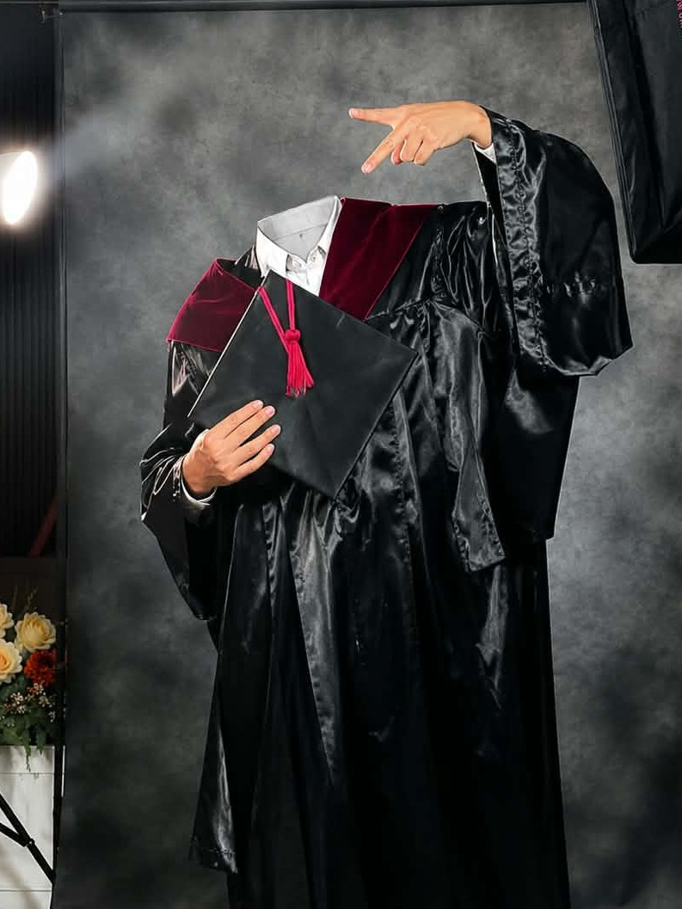

Instructor at the College of Computer Studies — passionate about teaching, technology, and empowering the next generation of IT professionals.
A glimpse into my journey as an educator in Computer Studies
I'm Silvestre Ivan, an Instructor at the College of Computer Studies. I am dedicated to shaping future IT professionals through quality education, practical skills, and continuous guidance.
With a genuine passion for technology and teaching, I strive to create an engaging learning environment where students can grow both academically and personally. I believe in the power of knowledge-sharing, mentorship, and building strong foundations in computer science and information technology.
The spirit of “Building Bridges, Breaking Waves” resonates with my role — connecting students to opportunities while helping them overcome challenges in their academic and professional journey.
Areas that drive my work as an educator and technologist
Teaching core concepts in programming, systems, and information technology.
Guiding and supporting students to reach their full academic and career potential.
Staying updated with the latest trends and bringing practical insights into the classroom.
Building bridges between students, faculty, and the broader tech community.